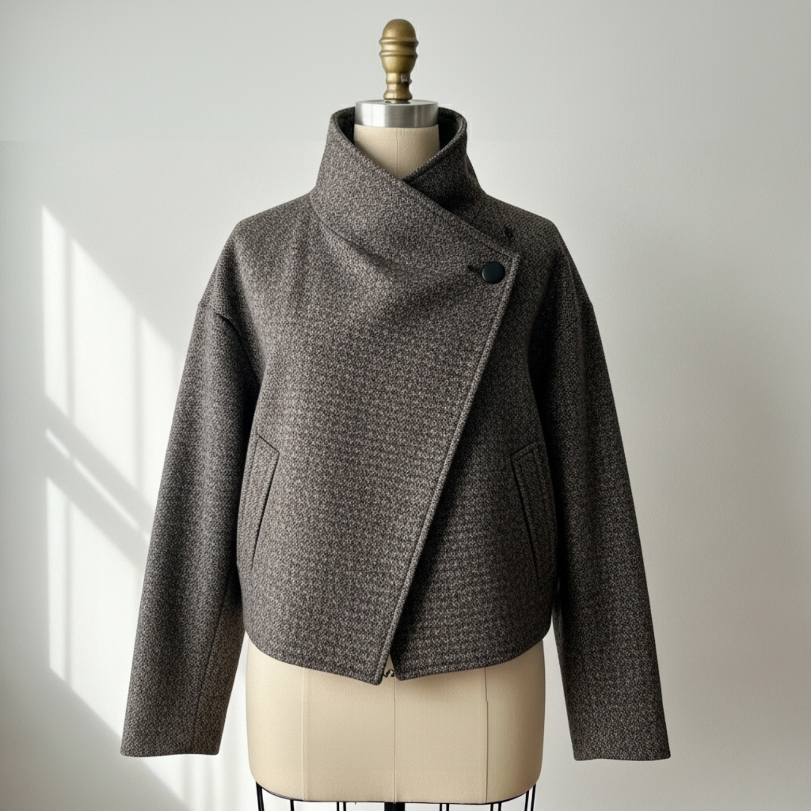
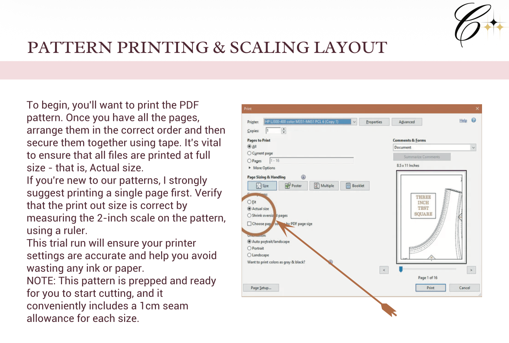
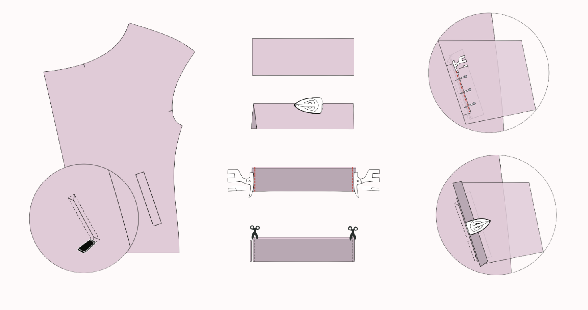
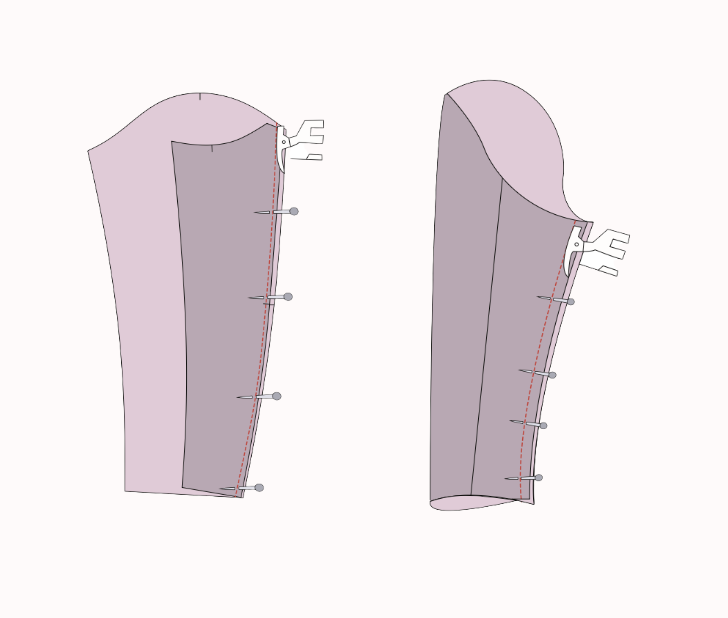
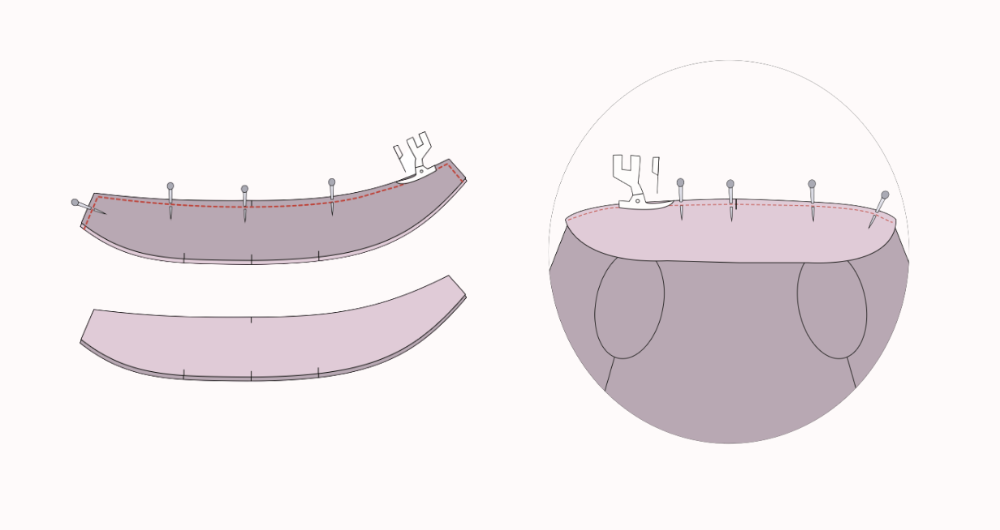
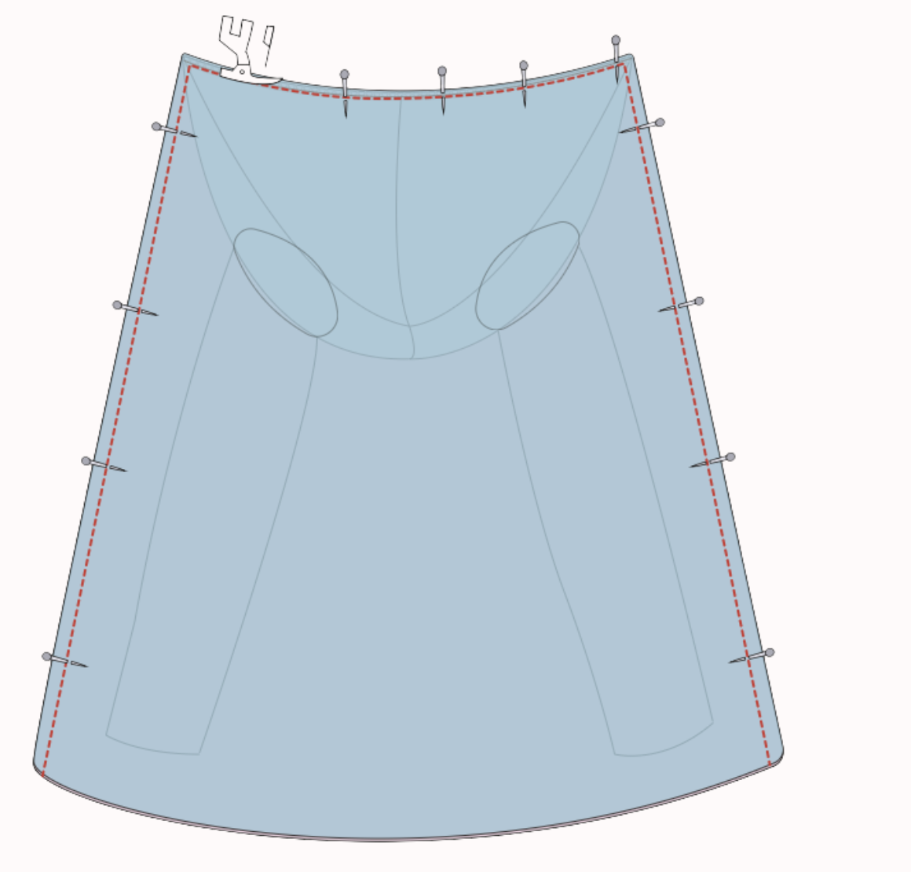
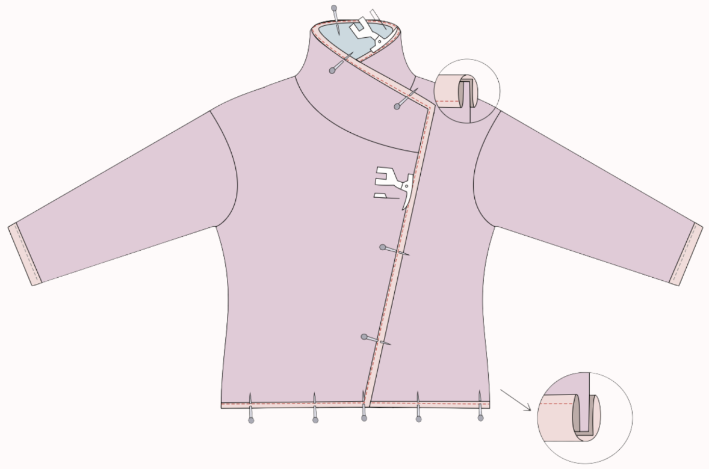
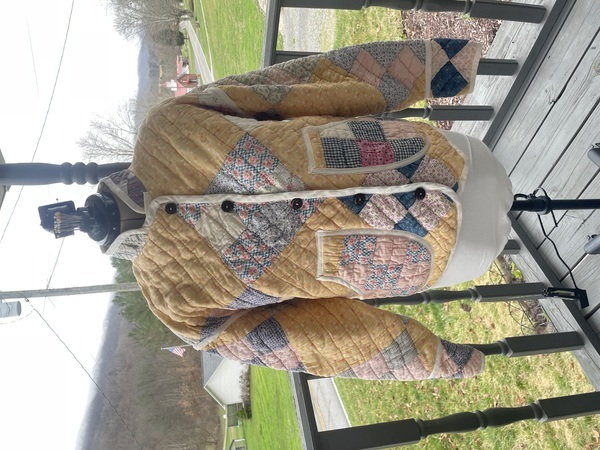
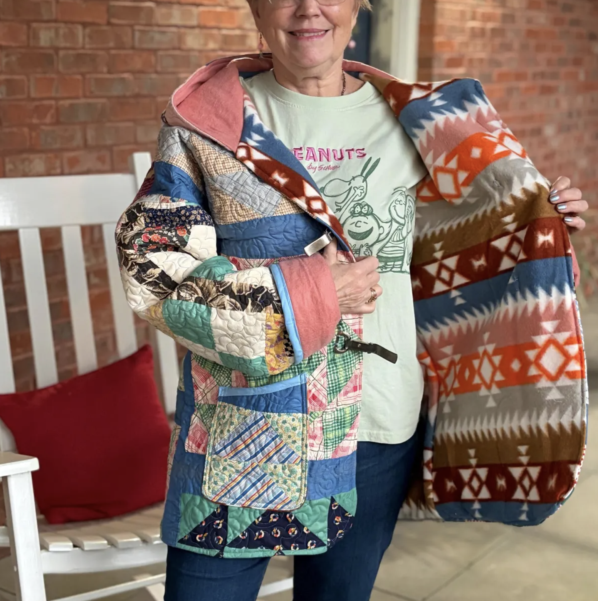
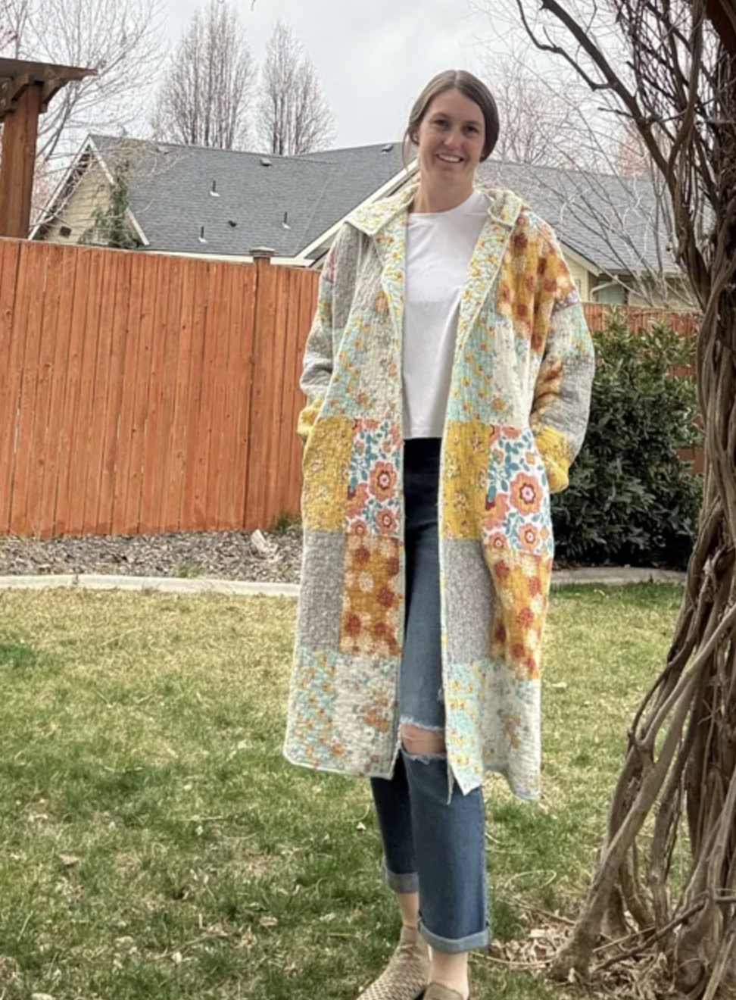

There are jackets, and then there are jackets with presence. The Funnel Neck Jacket by LU2COHOUSE belongs to the second category — built around a dramatic high collar that commands attention, welt pockets with boon pieces for a clean finished look, tailored two-piece sleeves, and a fully lined interior with bias-bound edges. Wool is the standout fabric choice: it holds the collar shape, drapes beautifully at the hem, and gives the finished piece a weight that reads as proper tailoring. This guide walks through the core construction milestones of this womens jacket sewing pattern — the full pattern includes every graded piece, detailed welt pocket templates, and a 21-page illustrated instruction booklet covering all 21 steps of the construction process in precise, beginner-friendly detail.
1 Choosing Fabric: The Best Pre-Quilted Textiles for a Funnel Neck Jacket
The Funnel Neck Quilted Jacket is best crafted in pre-quilted fabrics that provide structure, warmth, and texture without any extra padding. Because of its tailored silhouette and distinctive high collar, fabric choice plays a major role in both the overall look and the drape of the finished piece.
As you can see in this tutorial, we chose Wool or Wool Blends — and it is the fabric we recommend most for this design. Wool brings natural warmth, a beautifully structured drape, and a luxurious finish that perfectly complements the jacket's tailored silhouette and high funnel collar. A charcoal or dark wool tweed like the one shown here gives the jacket a refined, timeless character that pairs effortlessly with trousers or skirts for any season.
Pre-Quilted Cotton offers a soft, breathable option that is lightweight yet maintains the jacket's structured shape — perfect for casual daywear or layering in spring and fall. Pre-Quilted Nylon or Polyester delivers a modern utility aesthetic: durable, slightly water-resistant, and lightweight, making it ideal for sporty or streetwear-inspired designs that stay structured without bulk.
For a casual, textured look with built-in structure, Pre-Quilted Denim holds its shape while keeping the high collar and two-piece sleeves comfortable and wearable — perfect for urban or retro-inspired styles. And for a truly elevated statement piece, Pre-Quilted Velvet or Velour creates a plush, refined look that adds depth and elegance to the tailored silhouette — ideal for evening or occasion wear.

From cotton to velvet — choose the pre-quilted fabric that suits your style and season
2 How to Print a Funnel Neck Jacket PDF Pattern at Home
Before cutting your fabric, you need your clothing patterns prepped. For this tutorial, we are using the LU2COHOUSE Funnel Neck Quilted Jacket Sewing Pattern — the exact pattern used to create the jacket you see in this guide. Ensure your PDF pattern is printed at full size — meaning your printer settings must be set to "Actual size" with no scaling. Always print the first page only and verify the scale is correct by measuring the 2-inch test square with a ruler before printing all pages.
Additionally, use layered PDF technology to your advantage. Open the file in Adobe Acrobat Reader, click on the "Layers" icon, and click the eye icon to deselect the sizes you do not need. This saves ink and makes your pattern lines incredibly easy to read.

Set your printer to "Actual size" — then verify with the test square before printing all pages
3 How to Choose the Right Size for Your Funnel Neck Jacket Pattern
Every body is different, so choosing the correct size is crucial for a great fit. Using a measuring tape, gently measure your bust, waist, and hips, keeping the tape comfortably fitted — not too tight or too loose — to ensure accuracy.
Compare your measurements with the pattern's size chart. The LU2COHOUSE Funnel Neck Quilted Jacket sewing pattern covers inclusive sizes from XXS through 5XL, making it one of the most size-inclusive jacket patterns available. If your measurements fall between two sizes, we recommend choosing the larger one for a more relaxed and comfortable fit — ideal for a layering coat pattern like this one.
Sewing this exact look along with us?
While this tutorial covers the major milestones, a perfect funnel neck jacket is all in the details.
To get the exact proportions, the inclusive size chart, and the full Funnel Neck instruction booklet — a 21-page PDF that walks you through all 21 construction steps in thorough, illustrated detail — you will need the LU2COHOUSE Funnel Neck Quilted Jacket Sewing Pattern. Available as an INSTANT DOWNLOAD, it includes formats for A4 and US Letter so you can print right at home, along with A0 for large-scale print shops, ensuring you can start cutting right away. The pattern also includes separate layers for every size and size measurements in both cm & inches.


Tools you will need
How to read the illustrations
4 How to Sew Welt Pockets with Boon Pieces on a Funnel Neck Jacket
The welt pocket uses boon pieces — a technique that creates a flush, professional opening with no visible stitching on the right side.
- Mark the pocket placement lines on the right side of the jacket front using tailor's chalk. Apply interfacing to the marked area on the wrong side for stability if desired.
- Fuse interfacing to the wrong side of both boon pieces. Fold each one lengthwise with right sides facing each other, pin both short ends, and stitch with a 1 cm seam allowance. Trim allowances to 0.5 cm and clip corners diagonally.
- Apply a piece of interfacing to the wrong side of the jacket front, covering the full pocket opening area. Place the prepared boon piece on the right side with the folded edge facing the center front, pin securely, and stitch along the marked line.
- Attach the lower pocket piece to the boon, fold the edge over the seam toward the top of the pocket, and press. Repeat for the upper pocket piece on the other side.
- Cut down the center of the pocket opening, stopping 1 cm before each end, then clip diagonally to the corners to form small triangles — do not cut through the stitching.
- Pull both pocket pieces through to the wrong side and press around the opening to create a clean rectangular welt. Edge stitch along the boon seam on the right side to secure it. Stitch the triangle seam allowances down at each end.
- Bring both pocket bag pieces together right sides facing, stitch around the sides and bottom, finish the raw edges, and press flat.

5 Building the Funnel Neck Jacket Body: Facing, Shoulders and Side Seams
- Join the front lining and front facing pieces: place them right sides together, align the center lines, pin, and sew along the marked stitching line. Press the seam open.
- Sew the center-back seam of the back pieces with a 1 cm seam allowance and press open. Repeat with the back lining pieces.
- Place the front and back pieces right sides together, matching all notches. Pin along shoulder and side seams and stitch with a 1 cm seam allowance. Finish raw edges and press seams open. Repeat with the lining pieces.

6 Sewing Two-Piece Sleeves for a High Collar Wool Jacket
- Take the upper and under sleeve pieces, align their edges right sides together, pin along the curved seam, and sew. Press the seam open. Repeat with the lining sleeve pieces.
- Fold the assembled sleeve lengthwise with right sides together, pin the aligned edges, and sew the sleeve seam. Press open and overlock the raw edges. Repeat with the lining sleeve.
- Place the right side of the sleeve against the right side of the bodice armhole. Align the sleeve side seam with the armhole side seam and pin.
- Ease the sleeve cap into the armhole, adjusting the distribution evenly, then pin firmly in place. Sew around the armhole, finish the seam with overlocking, and press. Repeat with the lining sleeve.

7 How to Construct and Attach the Funnel Collar
- Place both funnel collar pieces right sides together, matching all notches carefully. Pin along the outer edges and sew them together.
- Clip the corners and curves to help the collar turn smoothly, then turn right side out and press thoroughly for a crisp, polished edge.
- Match the collar's raw edges to the raw edge of the jacket neckline, aligning the center-back seam, front neckline notches, and shoulder seams. Pin all around so the collar sits evenly.
- Sew carefully around the entire neckline, then check the inside for any folds or tucks. Press the seam downward into the jacket so the funnel neck stands clean and upright.

8 How to Line and Finish a Funnel Neck Jacket with Bias Binding
The final construction stages bring together everything that makes the Funnel Neck Quilted Jacket a truly finished, professional garment — a clean sandwich lining, bias-bound wrist hems and front opening, and a refined button closure.
- Assemble the sandwich: outer jacket body on the bottom, collar placed in between, lining on top (right sides facing). Pin all layers together carefully.
- Begin stitching from the bottom edge, sew upward along one front, pass through the collar, continue down the other side, and finish at the opposite bottom edge. Turn the garment right side out.
- Align the wrist edges of the lining and main fabric right sides together and secure with pins. Overlock for durability if desired.
- Measure each wrist hem and cut a bias band to match. Open one folded edge, align with the wrist hem raw edge, pin, and stitch along the crease. Fold the band over to the inside, topstitch close to the folded edge, and press. Repeat for the second wrist.
- Measure the full continuous length from the hem, up one front, around the collar edge, and back down the other front. Cut a single bias band to match, adding a little extra.
- Open one folded edge, align with the raw edges of the collar, front opening, and hemline. Pin all the way around and stitch along the crease. Fold the band over to encase all raw edges, topstitch, and press for a smooth, professional finish.
- Place buttons evenly along the front opening following the pattern markings, stitching them onto the facing for a neat decorative finish over the hidden closures beneath.

Ready to Sew Your Own Funnel Neck Quilted Jacket?
A funnel neck jacket sewn in wool is one of those pieces you reach for without thinking — and knowing you built every welt pocket and set that collar yourself makes it yours in a way nothing off the rack ever could.
This tutorial walks you through the milestones — the full pattern completes the journey. The instruction booklet alone is 21 pages, covering all 21 construction steps in step-by-step illustrated detail so nothing is left to guesswork. Download today and start cutting.
What you will receive with the Funnel Neck Jacket Pattern:
- PDF sewing pattern — sizes XXS through 5XL
- US Letter printable pattern for home printers
- A4 printable pattern
- A0 printable pattern for large-scale print shops
- Separate layers for every size — easy to print only your size
- Size measurements in both cm & inches
- The complete 21-page instruction booklet — all 21 steps, illustrated in detail
- Instant digital access — no waiting!
[ Made by our community ]
What Sewers Made with our sewing Patterns




Want to explore more womens jacket patterns? We have a massive collection of beginner-friendly clothing patterns tailored for every style!
[ Related Guides ]

Terms of Use: All digital patterns, tutorials, and designs are for personal use only. Unauthorized commercial reproduction or distribution of any pattern or resulting garments is strictly prohibited to protect original designs.